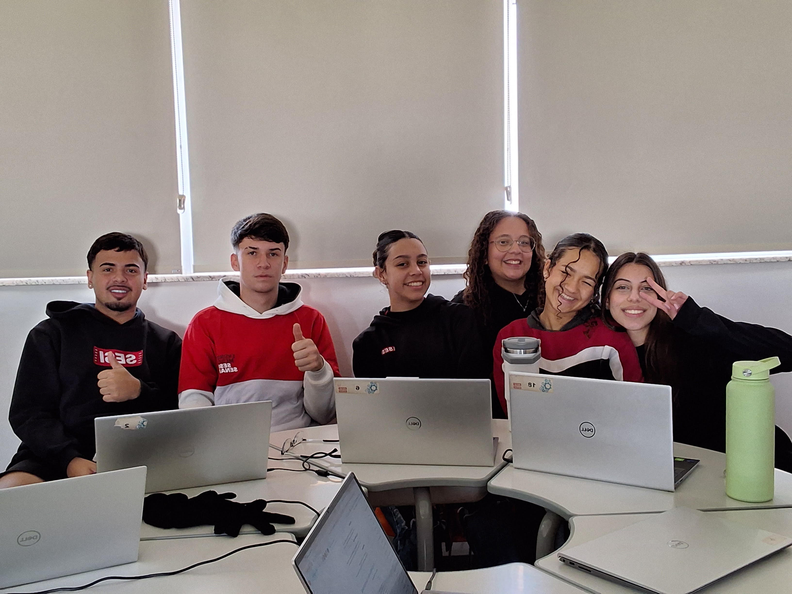

Nossa motivação
Dar espaço para cada história
O projeto nasceu da vontade de ouvir mulheres, registrar suas vivências e compartilhar suas trajetórias
com todo o respeito que elas merecem. Nós criamos este site para mostrar as conquistas, os desafios e os altos e
baixos reais de cada caminhada. Nosso objetivo é reforçar a importância da presença feminina na sociedade,
incentivando a autoaceitação, o orgulho de cada história e a coragem para continuar sempre em frente.
Como foi desenvolvido
Metodologia
1. Pesquisa
Levantamento de informações sobre
o tema, definição do objetivo e
organização dos setores participantes.
2. Entrevistas
Conversa com as participantes para
conhecer suas trajetórias, desafios,
conquistas e opiniões.
3. Coleta de dados
Registro das informações, frases,
depoimentos e imagens autorizadas.
4. Organização
Separação das histórias por setores
e definição das páginas, cards
e destaques.
5. Implementação tecnológica
Desenvolvimento da interface utilizando
HTML e CSS, com foco em responsividade,
acessibilidade e navegação intuitiva.